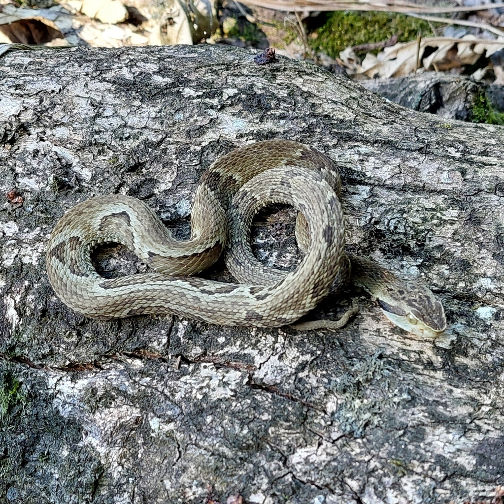

Bothrops jararacaIdentificação
A jararaca é uma serpente peçonhenta reconhecida pela cabeça triangular, presença de manchas escuras ao longo do corpo e pela fosseta loreal, localizada entre o olho e a narina.
Peçonhenta?
Sim, possui peçonha de elevada importância médica, sendo responsável por grande parte dos acidentes ofídicos no Brasil.
Importância ecológica
Atua no controle populacional de roedores e outros pequenos animais, contribuindo para o equilíbrio ecológico.
Apesar do risco de acidentes, a jararaca é importante para o ambiente e não deve ser morta.